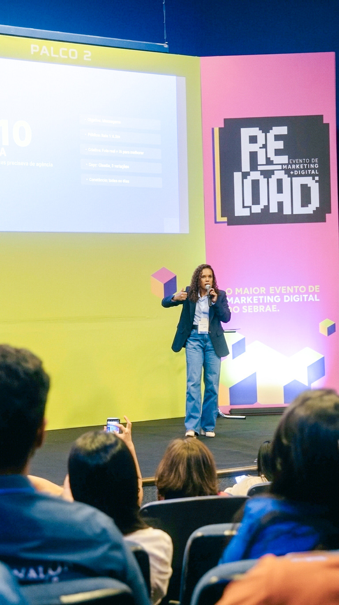
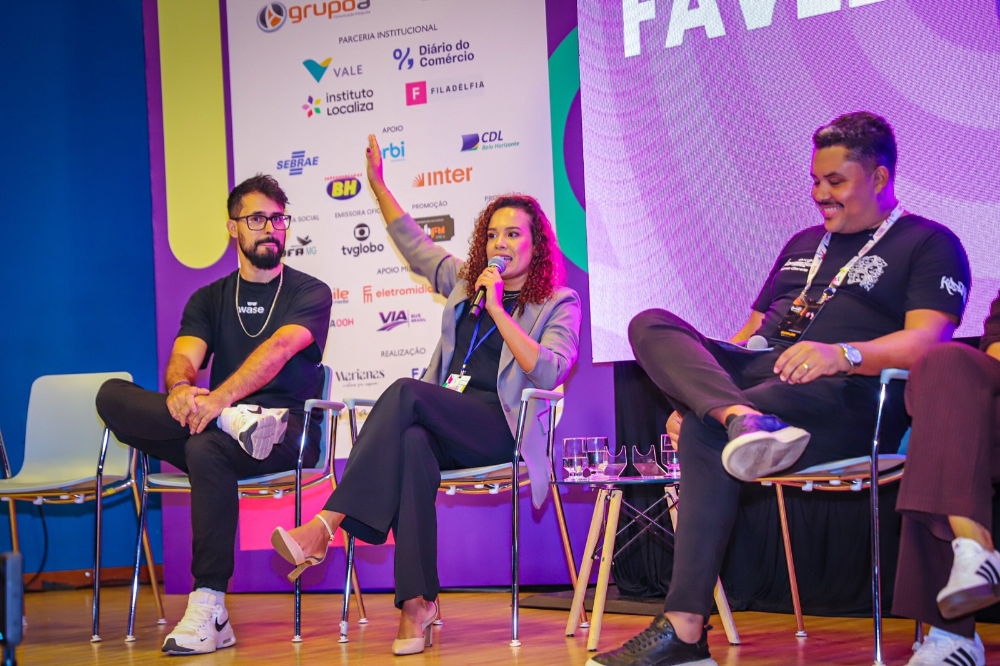
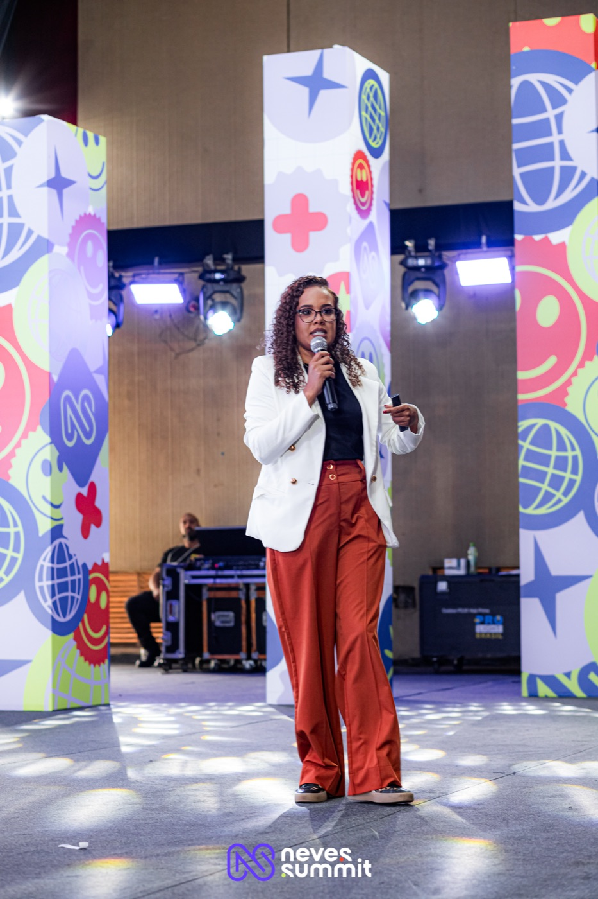
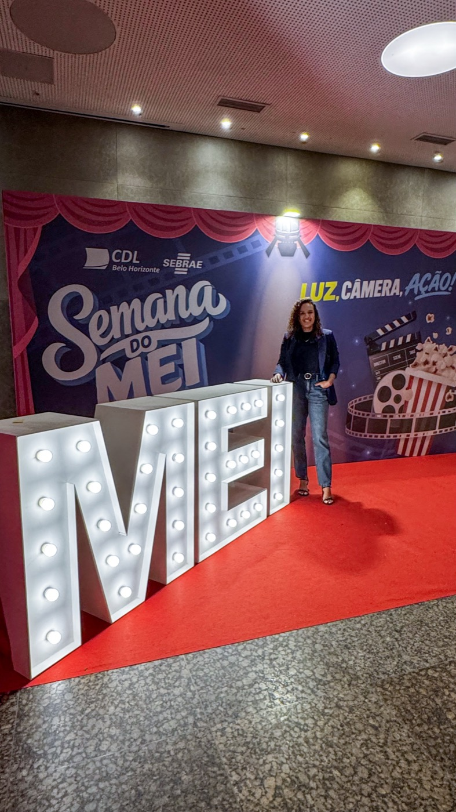

Lideranças públicas e campanhas
Para políticos, mandatos, pré-candidatos e equipes. Posicionamento digital, comunicação de mandato, tráfego político-eleitoral, leitura de território e dados para decisão.
Autoridade estratégica
Eu ajudo negócios, marcas, lideranças públicas e campanhas a saírem do improviso e construírem comunicação com método, dados, posicionamento e execução.
Sou especialista em tráfego político-eleitoral, estratégia de comunicação e inteligência de dados para campanhas, e fundadora da aaagência.
Comecei cedo, dentro de campanhas eleitorais. Em 2015, virei assessora parlamentar de um vereador e cuidei também do marketing do mandato. Desde então passei por comunicação de prefeitura, conteúdo, eventos públicos, assessoria política, campanhas majoritárias e proporcionais, tráfego pago e coordenação de equipes de marketing.
Em 2024, atendi 17 campanhas em São Paulo e Minas Gerais: 2 prefeitos e 7 vereadores eleitos, além de 5 suplentes. Em 2026, fiz a gestão de tráfego de três campanhas para deputado federal e estadual, em Minas Gerais e no Rio de Janeiro, incluindo uma reeleição em que também coordenei o marketing.
Por isso, meu trabalho vai além de subir anúncios. Envolve leitura de território, análise de eleitorado, planejamento de conteúdo, segmentação, otimização, relatórios fáceis de entender e alinhamento com a realidade política de cada candidatura.
Quero uma análise estratégicaHoje eu conecto estratégia de comunicação, tráfego pago, inteligência de dados, automação e IA para transformar decisões soltas em crescimento com método.
Posicionamento, narrativa, percepção pública, conteúdo e distribuição de mensagem para quem precisa comunicar com clareza.
Planejamento, segmentação, campanhas e leitura de métricas para transformar investimento em conversas e oportunidade real.
Automação, análise, conteúdo e fluxos inteligentes para acelerar decisões e reduzir achismo.
Posicionamento, narrativa, percepção pública, conteúdo e distribuição de mensagem para quem precisa comunicar com clareza.
Planejamento, segmentação, campanhas e leitura de métricas para transformar investimento em conversas e oportunidade real.
Automação, análise, conteúdo e fluxos inteligentes para acelerar decisões e reduzir achismo.
Para políticos, mandatos, pré-candidatos e equipes. Posicionamento digital, comunicação de mandato, tráfego político-eleitoral, leitura de território e dados para decisão.
Para negócios locais, prestadores de serviço e empresas. Campanhas para WhatsApp, geração de leads, captação de clientes e otimização por métricas.
Para equipes, agências, empreendedores e lideranças. Automação de processos, IA para conteúdo e dados, agentes personalizados. Estratégia prática, sem hype.
Conta o seu momento e a gente descobre o caminho juntos.
Levo para eventos de marketing e empreendedorismo o mesmo método que uso em campanhas e negócios: anúncios online, dados e inteligência artificial na prática.

Palestrante na 8ª edição do maior evento de marketing digital do Sebrae Minas, em Belo Horizonte, ao lado de Shein, Google, TikTok e Shopee. Tema: como negócios crescem com pouco dinheiro usando IA.

Painel do Neves Summit no palco da Expo Favela Minas: como o evento nasceu e como cada convidado construiu autoridade na sua área. Maio de 2026.

Palestra sobre anúncios online e inteligência artificial para empreendedores de Ribeirão das Neves, em dezembro de 2025.

Palestra com oficina prática: anúncios online e IA para atrair, converter e vender mais, e como ter foto profissional usando IA. Maio de 2026.
Tráfego pago não corrige comunicação fraca. IA não substitui estratégia. Crescimento exige contexto, método e execução.Gabriella Cardoso, estrategista
Do diagnóstico pontual ao projeto completo.
Análise de posicionamento, leitura de presença digital, diagnóstico de comunicação e tráfego, com recomendações práticas.
Para entender os gargalos antes de investir maisPlanejamento de comunicação, estratégia de tráfego, IA aplicada à rotina, acompanhamento de métricas e priorização de ações.
Para quem precisa de direção contínuaEstratégia integrada, tráfego pago, conteúdo e posicionamento, inteligência de dados, automações com IA e plano de execução.
Para campanhas, mandatos, marcas e operaçõesNão. Minha trajetória começou e se consolidou na política, mas minha atuação hoje conecta comunicação, tráfego pago, dados e IA para campanhas, mandatos, negócios locais, marcas e lideranças.
Conta o que você precisa. A gente descobre juntos qual é o caminho.